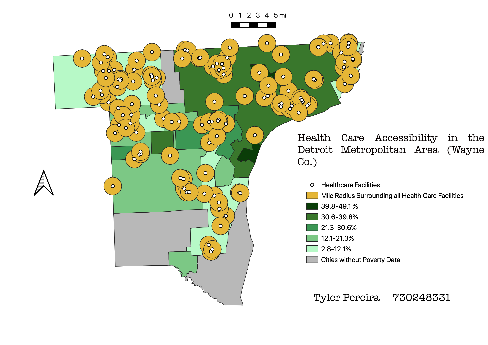

Homework 10: Geoprocessing Analysis
Tyler Pereira
Does access to health care accurately reflect poverty rates around the Detroit Metropolitan area?
Recently, both my urban geography and environmental justice classes have been discussing the effect of urban poverty on people's access to basic human needs. I chose to use my knowledge of QGIS to track the accessibility to health care centers in the Detroit area, which is ranked second in the country for the city with the highest poverty rates. Detroit itself is extremely racially segregated, and certain neighborhoods lack basic infrastructure that prevents their residents from accessing medical care, healthy food, and safety needs. I started my map by creating a choropleth using poverty rates in Detroit and its surrounding neighborhoods, with the darker green being the areas with higher poverty percentages. I then layered points of government-recognized health care centers on top of the finished choropleth, and created buffers with mile radii. Considering that many inner-city residents may not have the physical capability of transportation, I thought that a mile would be an appropriate distance expected between healthcare centers. I discovered that many of the regions in Wayne county, specifically those with extremely high poverty rates, were not located near any type of health care center. River Rouge and Ecorse, specifically, didn't have medical assistance for several miles. I also noticed that Detroit itself had certain regions that were clustered with health care, and others that seemed to be completely desolate of it. Many of the regions with lower poverty rates, such as Livonia and Grosse Pointe, had a high density of medical care centers.

After the completion of my first map, I wanted to experiment more with other geoprocessing tools, such as dissolves. I thought that my first map was a little bit overwhelming with city names and borders, so I wanted to create a simpler one that would help me present the data in its rawest form. I ended up using dissolves at each level of the choropleth categories, ultimately doing without city boundaries and combining regions based on their poverty ratings. This way, we can see how the health care centers would appear without the distraction of municipal distinctions, since it is likely that many people would have to travel out of their own city to get medical help.

Based on both of my maps, it is clear that there are disparities in accessibility to healthcare based on economic status. While there were some outlier regions, many impoverished regions of Detroit and surrounding cities didn't have any healthcare facilities for miles around, while some of the more affluent suburban regions in Wayne county had an abundance. Considering that the data I collected included hospice facilities, urgent cares, and mental health institutions, it is definitely concerning that some of the poorest people in the country don't have access to basic medical resources.
Data used for this project
CSV Dataset Containing Poverty Percentage Data
Link to Shapefile Containing Healthcare Facility Locations
Link to Shapefile with Wayne County Municipal Boundaries
Link to United States Census Bureau where I received my poverty data.
Link to the Wayne County Information Technology Department where I received my municipal boundaries shapefile.
Link to the Michigan open data website where I downloaded my health care facility shapefile data.